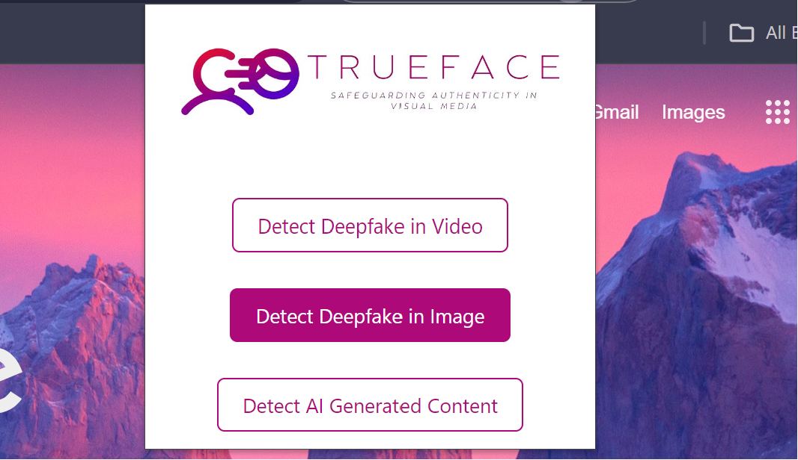
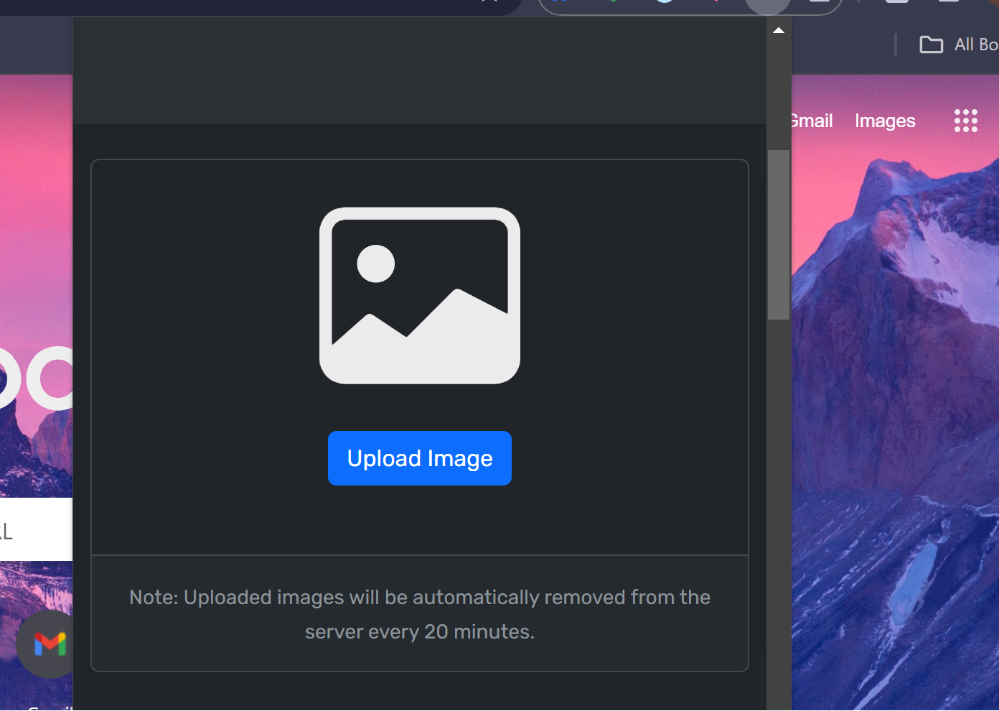
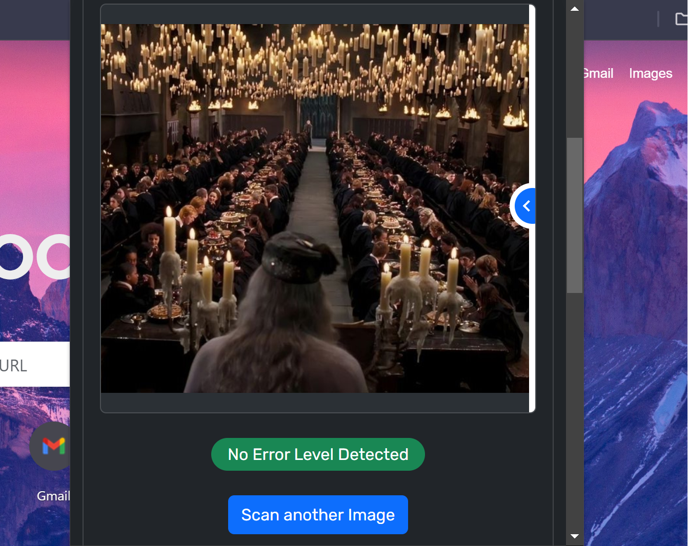
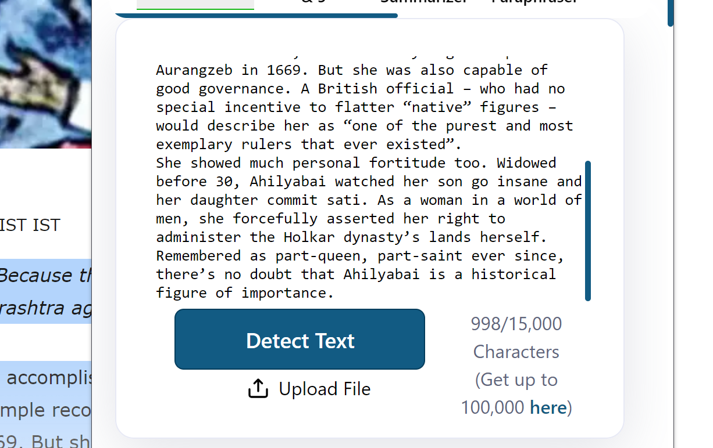
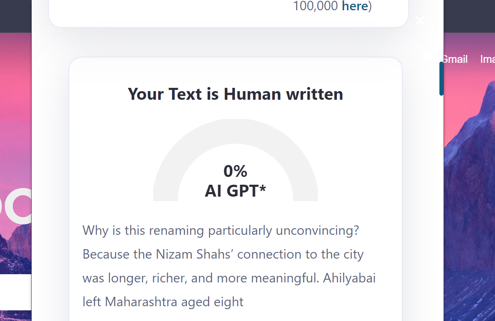

ABOUT OUR PROJECT
The Challenge of Deepfakes
The rise of Artificial Intelligence (AI) has brought incredible advancements, but also new challenges. One such challenge is the emergence of deepfakes: highly realistic, AI-generated videos that manipulate a person's appearance or speech. These videos can be used to spread misinformation, damage reputations, and even be used in security scams.
Deepfakes are becoming increasingly sophisticated, making it difficult for the average internet user to discern real from fake. This can have serious consequences, eroding trust in online content and creating a climate of uncertainty.
Our Solution: A Deepfake Detection Extension
We believe everyone deserves to browse the web with confidence and avoid falling victim to deepfake manipulation. That's why we're developing a website extension that empowers you to identify deepfakes in real-time.
Our extension offers the following features:
- Real-time Detection: Encountered a suspicious video online? Our extension analyzes it instantly, alerting you if it detects deepfake manipulation.
- Definable Results: Don't just get a yes or no answer. We provide detailed explanations behind each detection, including a confidence scale indicating the likelihood of manipulation.
- Seamless Browsing: Our extension integrates seamlessly into your browsing experience. No complicated setup or technical expertise is required, just install and start browsing with confidence.
By providing real-time deepfake detection with clear explanations, our extension aims to be a valuable tool for anyone who wants to navigate the online world safely and make informed decisions about the content they consume.
Future Endeavours:
Currently, our extension focuses on verifying the authenticity of images and news. We are planning to incorporate our trained machine learning model into the chrome extension in the near future. Our future goals also involve adding deepfake audio detection and potentially detecting artificially generated media.
Overall, we see this extension as just the starting point for more informed browsing experiences with numerous exciting opportunities ahead.
WIREFRAMES:
Step 1: Open the chrome extension from chrome menu bar. In this screenshot, we have chosen to check for deepfake in image.
Step 2: Upload your desired image to check its authenticity.
Step 3: Congratulations! You have obtained your result.
Step 4: Now, we'll be checking the whether a content is AI generated or not. For this, we first upload or paste the content.
Step 5: Congratulations! You have obtained your result.
